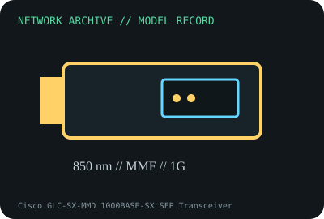

[ MODEL-SPECIFIC NETWORK HARDWARE RECORD ]
Cisco GLC-SX-MMD 1000BASE-SX SFP Transceiver
850nm Gigabit Ethernet multimode SFP with duplex LC and DOM. Specifications are tied to this named product; confirm the physical label, revision and source documentation.

IDENTIFICATION: Verify exact PID/model, revision, label and host support. The catalog separates nominal PHY/link specifications from measured throughput; no benchmark is asserted unless explicitly recorded.
Model-specific specifications and compatibility
| Subcategory | SFP transceivers: optical and copper |
|---|---|
| Exact product/model | Cisco GLC-SX-MMD 1000BASE-SX SFP Transceiver |
| Bus, ports and physical interface | Hot-pluggable SFP module for compatible 1GbE SFP slots; dual LC/PC optical connector. |
| PHY, radio or optical interface | 1000BASE-SX (IEEE 802.3z) at 850nm over multimode fiber. Cisco sheet lists 220m FDDI-grade, 275m OM1, 550m OM2 and up to 1km laser-optimized MMF cases; check actual fiber grade/link budget. |
| Nominal rate (not measured) | 1Gb/s nominal Ethernet line rate. Fiber reach is a medium/link-budget specification, not throughput; no module bench measurement claimed. |
| Measured throughput | No optical test result is claimed. For a measured link, record both modules, DOM transmit/receive values, fiber type/length, patch panel loss and traffic test. |
| Driver, OS and firmware | No host driver; managed switch/router firmware must support this Cisco PID and DOM. Cisco quality-ID checks may reject uncertified modules; platform support varies. |
| Platform/media compatibility | 850nm MMF only, duplex LC; match fiber type and partner wavelength. Cisco specifies minimum link distance on the module sheet; avoid using on single-mode fiber or with mismatched optics. |
| Variant warning | GLC-SX-MMD includes DOM and differs from GLC-SX-MM (older/no DOM), GLC-LH-SMD single-mode/multimode and vendor-coded compatibles. Verify label suffix and host compatibility. |
Revision, operation and measurement notes
GLC-SX-MMD includes DOM and differs from GLC-SX-MM (older/no DOM), GLC-LH-SMD single-mode/multimode and vendor-coded compatibles. Verify label suffix and host compatibility.
No host driver; managed switch/router firmware must support this Cisco PID and DOM. Cisco quality-ID checks may reject uncertified modules; platform support varies.
No optical test result is claimed. For a measured link, record both modules, DOM transmit/receive values, fiber type/length, patch panel loss and traffic test.
Archival, ESD and preservation notes
Record PID, serial/date code, DOM values, host port/firmware and fiber patch. Fit dust caps, clean LC ends with proper tools, never view an active fiber, and store in an ESD-safe module case.
Retain source provenance and the revision/date of each supporting document. Store public records without credentials, personal information or other secrets.
Primary manufacturer and standards sources
- Cisco Gigabit Ethernet SFP modules data sheetPrimary manufacturer or standards reference; confirm exact part label, revision, and platform qualification.
- Cisco transceiver compatibility matrixPrimary manufacturer or standards reference; confirm exact part label, revision, and platform qualification.
- IEEE 802.3 Ethernet standardsPrimary manufacturer or standards reference; confirm exact part label, revision, and platform qualification.
Manufacturer source links are provided for the stated model or exact product family; use the board label and the official revision-specific compatibility list for final qualification.